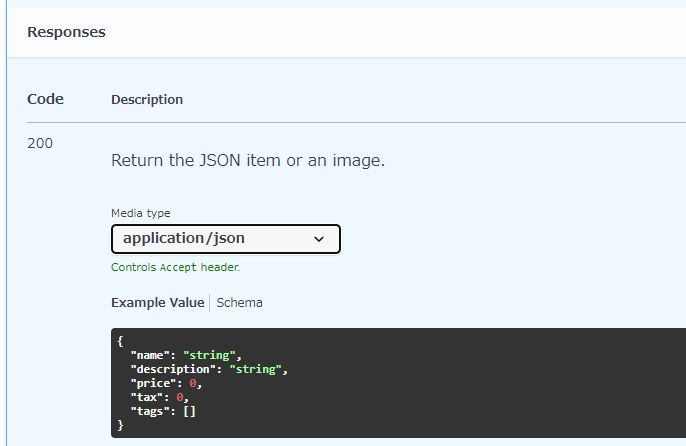

〈FastAPI API ドキュメントを生成する〉
Table of Contents
1 FastAPI API ドキュメントを生成する
1.1 FastAPI 公式チュートリアル
- https://fastapi.tiangolo.com/ja/tutorial/response-model/
- https://fastapi.tiangolo.com/ja/tutorial/response-status-code/
- https://fastapi.tiangolo.com/ja/tutorial/path-operation-configuration/#summary-and-description
- https://fastapi.tiangolo.com/ja/advanced/path-operation-advanced-configuration/#openapi
- https://fastapi.tiangolo.com/ja/advanced/additional-responses/
1.2 パスオペレーションデコレータ
1.2.1 引数 response_model
- パスオペレーションデコレータに名前つき引数 response_model を指定すると、返り値の型を定義する。
- 型の表現には Pydantic model 、リスト、辞書、スカラーを使える。
- スカラーには integer, boolean などがある。
- OpenAPI スキーマの responses に反映される。
- 参考情報
{kind=link}
{kind=link}
{kind=link}
1.2.2 引数 status_code
- パスオペレーションデコレータに名前つき引数 status_code を指定すると、レスポンスのステータスコードを定義する。
- OpenAPI スキーマの responses に反映される。
- 参考情報
{kind=link}
{kind=link}
1.2.3 引数 summary, description
- パスオペレーションデコレータに名前つき引数 summary を指定すると、エンドポイントの要約を定義する。
- パスオペレーションデコレータに名前つき引数 description を指定すると、エンドポイントの説明文を定義する。
- OpenAPI スキーマの summary, description に反映される。
- 参考情報
{kind=link}
{kind=link}
1.2.4 引数 include_in_schema
- パスオペレーションデコレータに名前つき引数 include_in_schema=False を指定すると、OpenAPI スキーマ から path operation を除外する。
- 参考情報
- 例
- ソースコード
@app.post("/items/", include_in_schema=False) - FastAPI で生成したAPIドキュメント
- FastAPI で生成した OpenAPI スキーマ
- http://localhost:8000/openapi.json
- エンドポイント POST "items" が登場しない。
- ソースコード
{kind=link}
1.2.5 引数 responses
- パスオペレーションデコレータに名前つき引数 responses を指定すると、
- 参考情報
- 例
- ソースコード
@app.get( "/items/{item_id}", response_model=Item, responses={ 200: { "content": {"image/png": {}}, "description": "Return the JSON item or an image.", } }, ) - FastAPI で生成したAPIドキュメント
- http://localhost:8000/docs#/default/read_item_items__item_id__get
- 
- デコレータ引数 responses をつけない場合、 Media type: application/json だけ。
- デコレータ引数 responses を付ける場合、 Media type: application/json と Media type: image/png の2種類となる。
- FastAPI で生成した OpenAPI スキーマ
- http://localhost:8000/openapi.json
- responses 200 content に "application/json" と "image/png" の2種類が記されている。
- ソースコード
{kind=link}
{kind=link}
{kind=link}